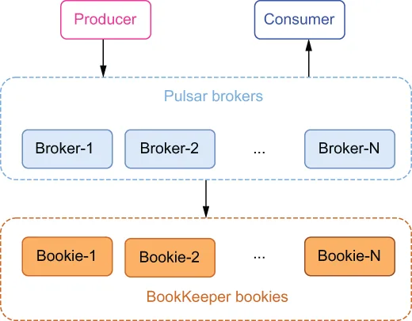

In order to better understand the scalability of Pulsar, let’s look at a typical Pulsar installation. As you can see from figure 1.21, a Pulsar cluster is composed of two layers: a stateless serving layer, which is made up of a set of brokers for handling client requests, and a stateful persistence layer, which is made up of a set of bookies for persisting the messages.
为了更好地理解 Pulsar 的可扩展性，让我们来看一个典型的 Pulsar 部署。如图 1.21 所示，一个 Pulsar 集群由两层构成：一个无状态的服务层，由一组负责处理客户端请求的 broker 组成；以及一个有状态的持久化层，由一组负责持久化消息的 bookie 组成。

\Figure 1.21 A typical Pulsar cluster
图 1.21 一个典型的 Pulsar 集群
This architectural pattern, which separates the storage of the messages from the layer that serves the messages, differs significantly from traditional messaging systems which have historically chosen to co-locate these two services. This decoupled approached has several advantages when it comes to scalability. For starters, making the brokers stateless allows you to dynamically increase or decrease the number of brokers to meet the demands of the client applications.
这种把消息存储与消息服务层分离开来的架构模式，与传统消息系统显著不同——后者历来选择把这两项服务放在一起。这种解耦的方式在可扩展性方面具有若干优势。首先，让 broker 变成无状态的，使你能够根据客户端应用的需求动态地增加或减少 broker 的数量。
Seamless cluster expansion
无缝集群扩容
Any bookies that are added to the storage layer are automatically discovered by the brokers, which will then immediately begin to utilize them for message storage. This is unlike Kafka, which requires repartitioning the topics to distribute the incoming messages to the newly added brokers.
任何被添加到存储层中的 bookie 都会被 broker 自动发现，随后 broker 会立即开始利用它们来存储消息。这一点与 Kafka 不同——Kafka 需要对主题重新分区，才能把传入的消息分发到新添加的 broker 上。
Unbounded topic partition storage
无上限的主题分区存储
Unlike Kafka, the capacity of a topic partition is not limited by the capacity of any smallest node. Instead, topic partitions can scale up to the total capacity of the storage layer, which itself can be scaled up by simply adding additional bookies. As we discussed earlier, partitions within Kafka have several limitations on their size, whereas no such restrictions apply to Pulsar.
与 Kafka 不同，主题分区的容量并不受限于任何最小节点的容量。相反，主题分区可以扩展到存储层的总容量，而存储层本身又可以通过简单地添加更多 bookie 来扩容。正如我们前面讨论过的，Kafka 中的分区在其大小上存在若干限制，而 Pulsar 则没有这类限制。
Instant scaling without data rebalancing
无需数据再均衡的即时扩缩容
Because message serving and storage are separated into two layers, moving a topic partition from one broker to another can happen almost instantly and without any data rebalancing (recopying the data from one node to the other). This characteristic is crucial to many things, such as cluster expansion and fast failure reaction to broker and bookie failures.
由于消息服务与存储被分成了两个层次，把某个主题分区从一台 broker 迁移到另一台 broker 几乎可以瞬间完成，且无需任何数据再均衡（即把数据从一个节点重新拷贝到另一个节点）。这一特性对很多事情都至关重要，例如集群扩容，以及对 broker 和 bookie 故障的快速响应。